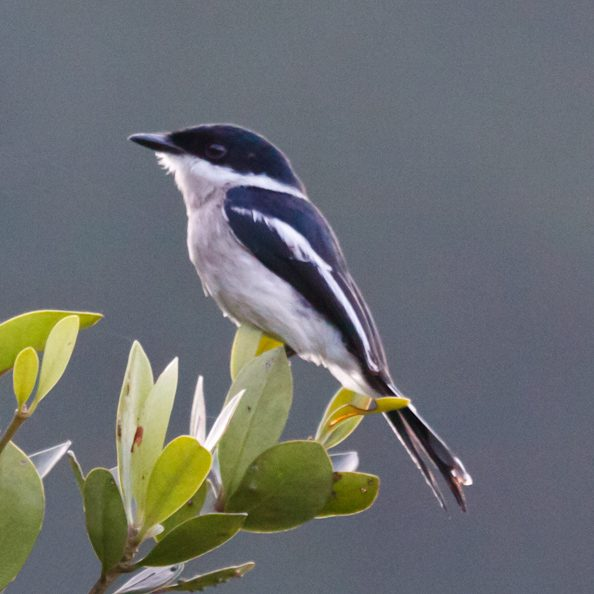

छोटा काला लटोराBar-winged Flycatcher-shrike
Hemipus picatus · Tephrodornithidae · BRD-0324

- Scientific name वैज्ञानिक नाम
- Hemipus picatus (Sykes, 1832)
- Family कुल
- Tephrodornithidae
- Hindi हिंदी
- छोटा काला लटोरा
- Local names स्थानीय नाम
- chota kala latora, bar-winged flycatcher-shrike, pied flycatcher-shrike
- Status here यहाँ की स्थिति
- native
- Movement आवागमन
- Resident, here all year
- Known from कहाँ दर्ज
- Others have published records from the Basti–Ayodhya districts बस्ती–अयोध्या के ज़िलों से दूसरों के प्रकाशित अभिलेख
- IUCN IUCN
- LC
- Review समीक्षा
- not yet reviewed
When to look कब देखें
Present all year. साल भर मौजूद।
Tell it apart from इनसे अलग पहचानें
छोटा काला लटोरा / Bar-winged Flycatcher-shrike
Hemipus picatus (Sykes, 1832) — Tephrodornithidae
छोटा काला लटोरा — तराई और मैदानी जंगलों के पेड़ों की ऊंची डालियों पर फुदकने वाला एक छोटा, आकर्षक और फुर्तीला काले-सफेद रंग का कीटभक्षी पक्षी है। नर का सिर और पीठ का ऊपरी हिस्सा चमकीले काले रंग का होता है, सीना और पेट सफेद होता है, और पंखों पर एक चौड़ी सफेद पट्टी चमकती है। इसके डैने पर सफेद पट्टी होने के कारण इसे 'बार-विंग्ड' कहा जाता है। यह मक्खीमार (फ्लाईकैचर) पक्षियों की तरह हवा में उड़कर उड़ते हुए कीड़ों को चपलता से पकड़ता है और फिर डाल पर लौट आता है।
Quick Identification त्वरित पहचान
| Feature | Description |
|---|---|
| Habit | Small, active, flycatcher-like canopy insectivore of open woodlands |
| Crown and Back | Glossy black in adult males; sooty brown in females |
| Wing Pattern | Bold, broad longitudinal white wing bar contrasting with dark flight feathers |
| Rump | Conspicuous white rump patch visible in flight |
| Underparts | Clean white underparts, occasionally washed with faint pale vinaceous-pink on breast |
| Tail | Black tail tipped with white on outer rectrices |
| Foraging Style | Perches upright on outer branches, making rapid aerial sallies after flying insects |
Field tip: Look in the mid-canopy of sal trees or fruiting figs for a small black-and-white bird making quick looping sallies into the air. The prominent white wing bar, white rump, and pied appearance distinguish it from small cuckoo-shrikes and true flycatchers.
हिंदी:
यह काले और सफेद रंग का एक छोटा पक्षी है जिसके पंखों पर चौड़ी सफेद पट्टी होती है।
नर की पीठ चमकदार काली और मादा की भूरी होती है, जबकि दोनों का पेट सफेद होता है।
यह डाल पर बैठकर हवा में उड़ते हुए पतंगों और मक्खियों को फुर्ती से झपट्टा मारकर पकड़ता है।
Morphology आकारिकी
Measurements as given by Baker (1924):
| Measurement | Range |
|---|---|
| Wing | wing 56 to- 64 mm. (Baker 1924 as Hemipus picatus) |
The Bar-winged Flycatcher-shrike is a diminutive, slender-billed passerine that combines morphological traits of shrikes and flycatchers. The adult male has a glossy jet-black crown, nape, back, and scapulars. A narrow white collar encircles the lower neck.
The rump is conspicuously white, forming a broad contrast against the dark mantle. The wings are blackish, boldly divided by a broad white band running across the median and greater secondary coverts. The underparts are pure white, sometimes exhibiting a delicate vinaceous-rosy suffusion across the breast in fresh plumage.
The bill is black, flattened at the base with strong rictal bristles adapted for aerially netting winged insects. The legs and feet are plumbeous-brown with sharp black claws. Females differ in having the upperparts sooty dark brown instead of glossy black.
Vocalisations. Vocalisations consist of sharp, metallic, cricket-like clicking notes and a brisk, cheerful whistling trill rendered as whirr-i-whirr-i-chit.
हिंदी:
इसके पंखों का फैलाव 56 से 64 मिमी तक होता है।
इसकी चोंच आधार पर चौड़ी और मजबूत होती है जिसके पास महीन बाल होते हैं जो कीड़ों को पकड़ने में मदद करते हैं।
यह पेड़ की चोटी से सीटी जैसी मधुर और तीखी आवाज निकालता है।
Behaviour & Ecology व्यवहार और पारिस्थितिकी
Hemipus picatus is primarily a mid-canopy and sub-canopy dweller, spending its day traversing the outer leafy periphery of mature trees. It rarely visits the ground.
The foraging strategy combines hover-gleaning from foliage with energetic aerial flycatching. When sallying, the bird launches from an exposed twig, snaps up an insect in mid-air with an audible click of the bill, and loops smoothly back to a nearby perch. Pairs stay in continuous vocal contact and routinely join mixed foraging parties composed of minivets, fantails, and leaf warblers.
हिंदी:
यह हमेशा पेड़ों की मध्यम और ऊंची शाखाओं पर सक्रिय रहता है।
यह उड़ते हुए कीड़े को हवा में ही चोंच से पकड़कर वापस अपनी डाल पर बैठ जाता है।
Life Cycle / Phenology जीवन चक्र
In the Western Ghats it breeds in March, April and May; in the Himalayas it breeds between 3,000 and 7,000 feet in forest (Baker 1924, pp. 305–306). Males perform short fluttering flight displays.
The nest is an exquisitely disguised, tiny, shallow cup composed of fine rootlets, moss, and bark flakes, bound together with copious spider webs. It is cemented securely into a horizontal fork or atop an outer branch, blending seamlessly with the bark. A small clutch of eggs is laid and incubated for a few weeks. Both parents feed the chicks until they fledge.
हिंदी:
पश्चिमी घाट में यह मार्च से मई के बीच प्रजनन करता है; हिमालय में यह जंगलों में घोंसला बनाता है (बेकर 1924)।
यह पेड़ की डाल पर मकड़ी के जालों और काई से एक बेहद छोटा प्यालेनुमा घोंसला बनाता है।
कुछ सप्ताह अंडे सेने के बाद बच्चे निकलते हैं जिनकी देखभाल दोनों मिलकर करते हैं।
Host Plants or Prey आहार
The Bar-winged Flycatcher-shrike is an obligate aerial and foliage insectivore, feeding upon small invertebrates:
- Flying insects including small moths, flies, winged termites, and small beetles
- Foliage caterpillars and geometric moth larvae gleaned from leaves
- Soft-bodied spiders snatched from tree trunks and outer branch tips
हिंदी:
इसका मुख्य आहार उड़ने वाले पतंगे, मक्खियां, छोटे भृंग (बीटल), मकड़ियां और पेड़ों की इल्लियां हैं।
Predators / Natural Enemies शत्रु व परभक्षी
Hawks and small carnivores take birds of this size. No source opened for this atlas names a specific predator of this bird.
हिंदी:
बाज़ और छोटे मांसाहारी इस आकार के पक्षियों का शिकार करते हैं। इस एटलस के लिए खोले गए किसी स्रोत में इस पक्षी के किसी विशिष्ट शिकारी का नाम नहीं है।
Agricultural / Human Relevance कृषि व मानव संदर्भ
The Bar-winged Flycatcher-shrike is an insectivore, catching insects on the wing or seizing them from foliage (Baker 1924, p. 307). It is protected under the Wildlife (Protection) Act, 1972.
हिंदी:
बार-विंग्ड फ्लाईकैचर-शाइक उड़ते हुए या पत्तियों पर बैठे कीड़ों को पकड़कर खाता है (बेकर 1924)। यह वन्यजीव (संरक्षण) अधिनियम, 1972 के तहत संरक्षित है।
Expected Locally स्थानीय रूप से अपेक्षित
Not a field record. Written from published accounts for eastern Uttar Pradesh. No confirmed local sighting yet — if you have seen it, that is what the atlas needs.
अभी तक स्थानीय पुष्टि नहीं। यह विवरण प्रकाशित स्रोतों से है, किसी अवलोकन से नहीं।
Search along mid-canopy sal branches, shaded mango groves, and riverine woodlands of the plain.
GBIF holds published records from these districts.
A first record would be a photograph of the bird with place and date, sent through the About page.
Distribution वितरण
Global and historical range: Native across South and Southeast Asia, from the Indian subcontinent across Sri Lanka, the Himalayan foothills, southern China, Myanmar, Thailand, Indochina, and the Greater Sunda islands.
Regional status: Resident in deciduous woodlands, groves, and riverine tracts across eastern Uttar Pradesh, including historical records from Awadh and the Terai borderlands.
हिंदी:
यह भारत, नेपाल, श्रीलंका और पूरे दक्षिण-पूर्व एशिया के वनों में पाया जाता है।
अवध और पूर्वांचल के पुराने बागों और जंगलों में यह साल भर देखा जा सकता है।
Research Questions शोध प्रश्न
- How do sallying frequencies and foraging heights of Hemipus picatus vary between closed sal canopy and edge habitats? / घने साल वनों और खुले किनारों के बीच इस पक्षी के शिकार करने की ऊंचाई में क्या अंतर आता है?
- What role do flycatcher-shrikes play in mixed-species canopy flocks regarding sentinel vigilance and insect flushing? / मिश्रित कीटभक्षी झुंडों में यह पक्षी सुरक्षा निगरानी और कीड़े उड़ाने में क्या भूमिका निभाता है?
- What is the success rate of cryptic lichen-covered nests against avian predators in fragmented forest patches?
- How do seasonal shifts in foliage caterpillar density influence breeding territory size and timing?
- What are the fine-scale acoustic differences between territorial trills and flock cohesion contact calls?
Similar Species मिलती-जुलती प्रजातियाँ
| Species | How to tell apart | हिंदी | ||
|---|---|---|---|---|
| [[white_rumped_shama\ | White-rumped Shama]] (Copsychus malabaricus) | Much larger undergrowth songbird with chestnut belly and very long white-edged tail | शामा | |
| [[greater_racket_tailed_drongo\ | Greater Racket-tailed Drongo]] (Dicrurus paradiseus) | Large [[black_drongo\ | black drongo]] with conspicuous crest and racket tail streamers; completely different build | भीमराज |
Field rule: The small size, pied coloration, glossy black back (or dark brown in female), clean white underparts, and prominent longitudinal white wing bar distinguish the Bar-winged Flycatcher-shrike.
हिंदी:
छोटा आकार, काला-सफेद रंग, पंखों पर चौड़ी सफेद पट्टी और सफेद कमर इसकी अचूक पहचान हैं।
Taxonomy & Classification वर्गीकरण
Original description. Described by William Henry Sykes in 1832 in Proceedings of the Committee of Science and Correspondence of the Zoological Society of London (pt. 2, p. 85), under the basionym "Muscicapa picata".
Synonyms and historical names. Stuart Baker (1924, p. 305) treated the species under Hemipus picatus, recording the Hindustani vernacular name "Chota kala Latora".
Subspecies. Multiple subspecies are recognized across Asia; mainland northern Indian populations represent the black-backed nominate race Hemipus picatus picatus (Sykes, 1832).
Family and order placement. Order Passeriformes; family Tephrodornithidae (woodshrikes and flycatcher-shrikes); genus Hemipus.
IUCN status rationale. Evaluated as Least Concern (LC) on the IUCN Red List because of its vast range, adaptability to various forest types, and lack of significant demographic declines.
हिंदी:
साइक्स ने 1832 में इसका नामकरण किया था। यह टेफ्रोडोर्निथिडे कुल का सदस्य है और संकटमुक्त (LC) है।
Photo Gallery फोटो गैलरी
No photos yet — add field photos to media/species/bar_winged_flycatcher_shrike/ and run node scripts/sync_photos.js.
Photos needed आवश्यक फोटो
- [ ] Adult male perched on bare branch showing white wing bar (डाल पर बैठा सफेद पट्टी दिखाता नर पक्षी)
- [ ] Female with brownish mantle sallying from canopy (हवा में झपट्टा मारती मादा)
References संदर्भ
- Sykes, W. H. (1832). Proceedings of the Committee of Science and Correspondence of the Zoological Society of London, pt. 2, p. 85 (as "Muscicapa picata").
- Baker, E. C. S. (1924). The Fauna of British India, Including Ceylon and Burma. Birds. Vol. 2. Taylor & Francis, London, p. 305 (as Hemipus picatus).
- Ali, S. & Ripley, S. D. (1987). Compact Handbook of the Birds of India and Pakistan. Oxford University Press, New Delhi.
- BirdLife International (2016). Hemipus picatus. The IUCN Red List of Threatened Species 2016: e.T22707797A94138139.
- Wildlife (Protection) Act, 1972 (as amended in 2022). Government of India, Schedule II.
- GBIF Occurrence Data — Hemipus picatus (Sykes, 1832), India (2025).
Source file: species/fauna/birds/bar_winged_flycatcher_shrike.md